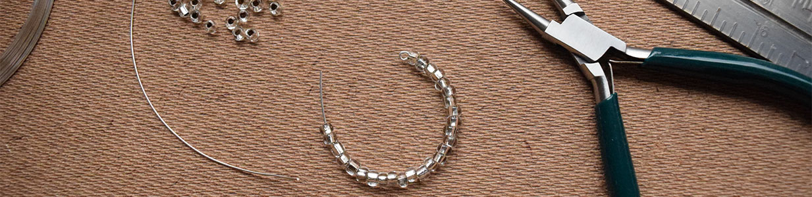
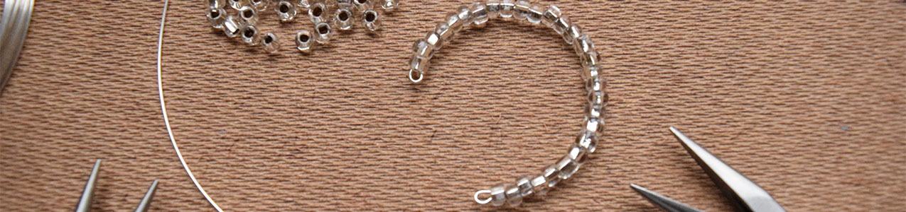
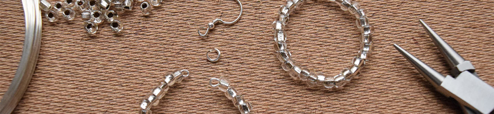
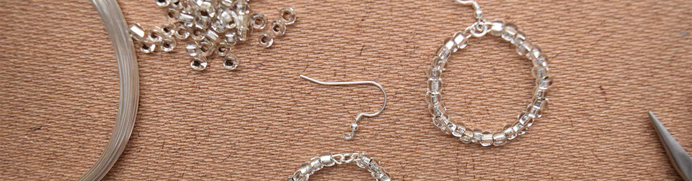

Step 1
Cut a piece of beading wire about 4 inches long. Make a small loop at one end with the round-nose pilers. Thread on the beads from the other end.
Step 2
At the end of the wire, again make a small loop with the pliers.
Step 3
Use a jump ring to connect the two small loops.
Step 4
Open the loop at the base of the earring wire, slide the jump ring into it, then close it.